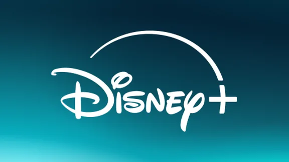
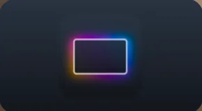
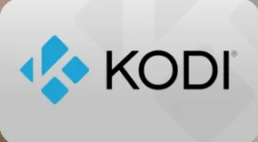
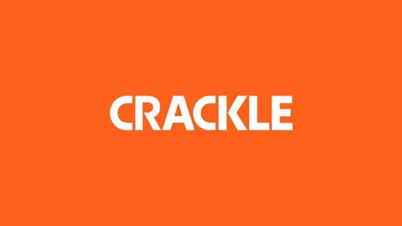
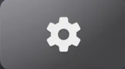
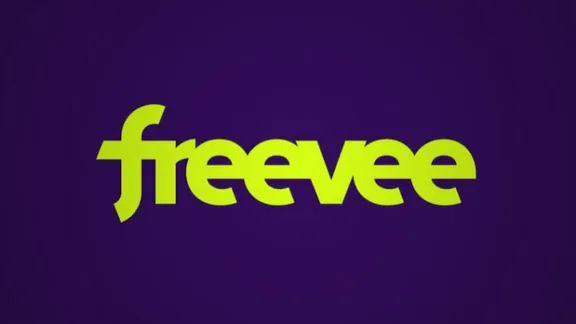
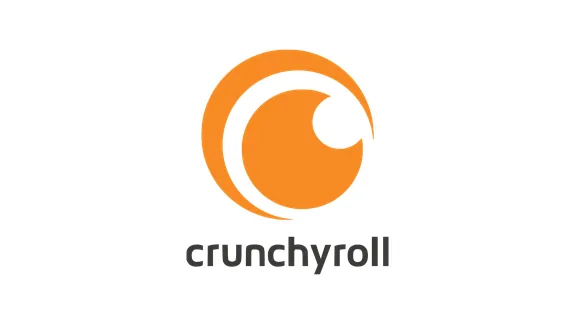

큰 화면에여백을.
광고도, 불필요한 정보도 없습니다. 화면이 켜지는 순간 남는 것은 빛과 그림자, 그리고 당신의 풍경뿐.
이제 TV는 온전히 당신의 것입니다.


플래그십 TV의 품격을, 지금 가진 TV에서.
당신을 위한 화면.
기본 홈 화면은 다른 누군가를 위해 만들어집니다. HLine TV는 그 화면을 당신에게 돌려줍니다.
기본 런처
- 전원을 켜면 광고부터
- 추천 콘텐츠로 가득한 홈
- 내 앱은 몇 번의 클릭 너머
- 삭제할 수 없는 기본 앱
- 켤 때마다 광고
- 복잡한 홈 피드
- 앱이 깊숙이 숨겨짐
- 지울 수 없는 기본 앱
HLine TV
- 바로 보입니다 — 시간, 날씨, 자주 쓰는 앱을 한 화면에
- 방해하지 않습니다 — 화면 어디에도 광고 없이 균형을 유지합니다
- 손닿는 곳에 — 자주 쓰는 앱은 화면 아래에 고정
- 부담 없이 — 루팅 없이, 언제든 기본 화면으로 복귀
- 시간 · 날씨 · 자주 쓰는 앱을 한눈에
- 광고 없이, 중요한 것에만 집중
- 자주 쓰는 앱은 화면 아래에
- 루팅 불필요, 언제든 복구
조용하지만, 눈을 떼기 어렵습니다.
필요한 것만. 그 외에는 아무것도.
날씨는 한눈에.
화면 한쪽에 기온 · 공기질 · 도시 이름. 전원을 켜는 순간부터 그 자리에 있습니다.
시간은 원하는 곳에. 시간과 날씨는 각각 따로 조절할 수 있습니다. 크기, 위치, 표시 여부까지 모두 자유롭습니다.
움직이는 아름다움.
영화 같은 항공 영상, 엄선된 사진, 혹은 당신의 추억이 담긴 한 장. 볼 때마다 새롭습니다.

쉬는 순간에도 아름답게.
자리를 비우면 항공 영상, 배경화면 전환, 조용한 시계 중에서 골라 보세요. 1분부터 몇 시간까지 설정할 수 있습니다. 손을 대지 않아도 화면은 아름답습니다.

원하는 대로, 간편하게.
길게 눌러 이동 · 그룹화 · 숨기기 · 삭제. 휴대폰에서 로컬 링크를 열면 배경화면과 도시 변경도 리모컨 없이 가능합니다.









아이콘도, 이름도, 당신 마음대로.
기본 TV에서는 제조사가 아이콘을 정합니다. 여기선 QR 코드를 찍어 휴대폰 설정 화면에서 사진으로 바꾸거나 이름을 고칠 수 있고, 마음이 바뀌면 되돌릴 수 있습니다.


언어를 바꿔도, 자연스럽게.




어떤 언어에서도 익숙하게.
시스템 언어에 맞춰 HLine TV가 자연스럽게 따라갑니다.
27개 기종, 하나하나 실기로 확인.
ADB 메뉴, 막히기 쉬운 지점, 우회 방법까지 문서에 정리했습니다.
목록에 없어도 Android 5.0 이상이면 사용할 수 있습니다.
Hisense
Sony
OPPO
Konka / Letv
해외 브랜드
설치는 몇 초면 끝.
간편한 설치, 깔끔한 복원.
루팅이나 시스템 파일 수정이 필요 없으며, 언제든 되돌릴 수 있습니다.
curl 한 줄 설치
# TV와 컴퓨터를 같은 네트워크에 연결하고 TV에서 ADB를 켜 주세요
curl -fsSL https://raw.githubusercontent.com/Harleyline/hline-tv/main/tools/install.sh \
| TV=192.168.1.20 bash
직접 연결해 설치
# adb에 익숙하다면 (TCL / FFALCON은 adb 설치를 거부합니다)
adb connect TV_IP:5555
adb install HLine-TV.apk
USB로 꽂고 열기만 하면
HLine-TV.apk를 USB에 복사해 TV의 파일 관리자에서 여세요. TCL / FFALCON에서는 대신 HLine-TV-Guard.apk를 사용하세요. 다른 파일은 설치 오류가 납니다.
설치가 막힌 기기를 위한 대안
일부 펌웨어(주로 TCL, FFALCON, OPPO)는 홈 화면임을 선언한 앱의 설치를 거부합니다. HLine-TV-Guard.apk는 그 선언만 뺀 같은 앱으로, 접근성 서비스로 홈 키를 대신 처리합니다. 모양과 동작은 동일합니다. 이 기종들은 USB로 설치하세요.
HLine TV에 대해 더 알아보기
보증에 영향이 있나요? 어떻게 되돌리나요?
루팅, 펌웨어 수정, 시스템 앱 삭제는 하지 않으며 기본 홈 화면이 될 뿐입니다. 돌아가려면 TV 설정에서 기존 홈을 선택하거나 HLine TV를 삭제하세요.
어떤 TV와 셋톱박스에서 되나요?
Android TV 5.0 이상의 TV · 셋톱박스 · 프로젝터. Xiaomi, Redmi, TCL, FFALCON, Skyworth, Sony, Hisense, OPPO 등에서 확인했습니다. Samsung(Tizen)과 LG(webOS)는 Android가 아니라 사용할 수 없습니다.
설치 오류가 나고 아무것도 설치되지 않습니다.
대부분 파일을 잘못 고른 경우입니다. HLine-TV.apk는 홈 화면이 되기 위해 홈 카테고리를 선언해야 하는데, TCL / FFALCON / OPPO 펌웨어는 그런 앱을 거부합니다. 화면에는 단순한 설치 오류, adb에서는 INSTALL_FAILED_VERIFICATION_FAILURE로 표시됩니다. HLine-TV-Guard.apk를 쓰세요. 선언만 뺀 같은 앱이며 접근성 서비스로 홈 키를 처리하고 모양과 동작도 동일합니다. TCL은 adb 설치 자체를 막으므로 USB나 TV의 파일 관리자에서 설치하세요.
설치했는데 홈 키를 누르면 예전 화면이 열립니다.
Xiaomi, TCL, Skyworth는 홈 역할을 자사 런처로 고정해 서드파티 앱이 가져갈 수 없습니다. HLine TV는 홈 가드로 홈 키를 대신 처리합니다. 순서대로 ① TV 설정에서 HLine TV의 접근성을 허용하고(일부 기종은 알림 접근도 필요), ② HLine TV를 한 번 더 연 뒤, ③ TV를 재시작하세요. 그래도 유지되지 않으면 해당 펌웨어가 전원을 켤 때 고정된 컴포넌트로 자사 런처를 띄우는 경우입니다(일부 Skyworth). 그 기종 지원을 추가해야 하지만 앱 자체는 정상 동작합니다.
데이터를 수집하거나 광고를 보여주나요?
시청 기록을 남기지 않으며 광고 자리도 어디에 없습니다. 네트워크는 날씨 · 배경화면 · 업데이트 등 필요한 기능만 사용합니다.
업데이트는 어떻게 하나요?
컨트롤 센터에 새 버전이 표시되면 '다운로드 및 설치'를 누르세요. 덮어써서 설치되며 설정과 배치는 그대로 유지됩니다.
내 사진과 동영상을 쓸 수 있나요?
네. 휴대폰 설정 화면에서 추가할 수 있습니다. 사진은 배경화면, 동영상은 화면 보호기가 되며 모두 TV에 저장됩니다.
업데이트해도 배치가 유지되나요?
네. 앱, 순서, 폴더, 사용자 아이콘, 배경화면, 설정이 모두 유지됩니다.
무료이고 오픈 소스인가요?
무료 · MIT 라이선스이며 소스는 GitHub에 있습니다. 계정이나 인앱 결제도 없습니다.